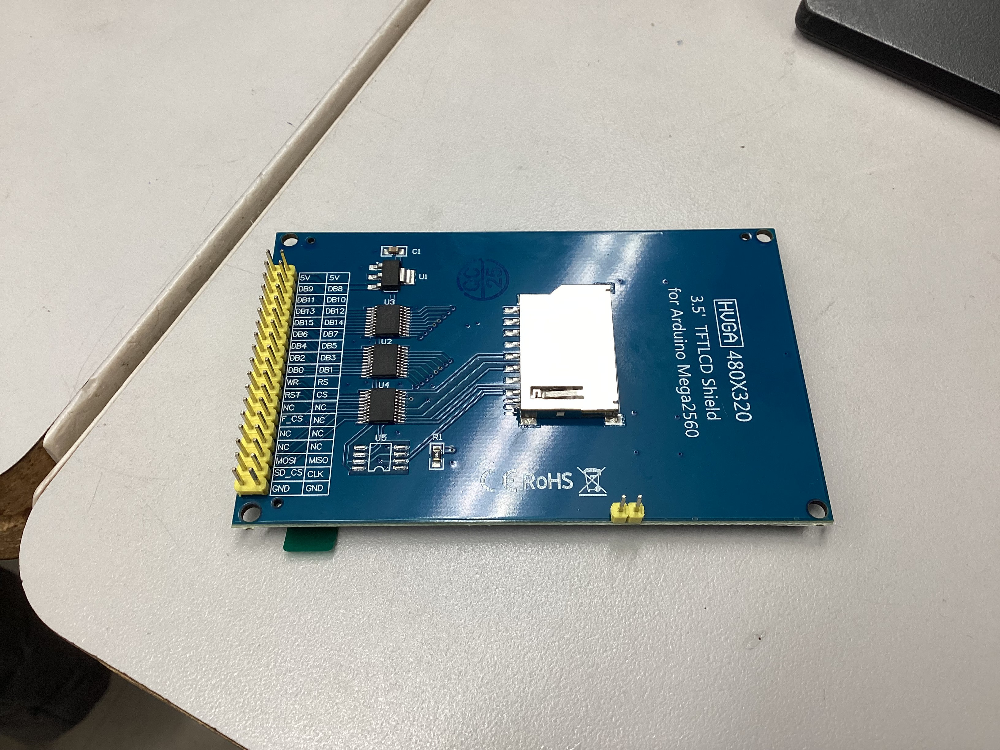
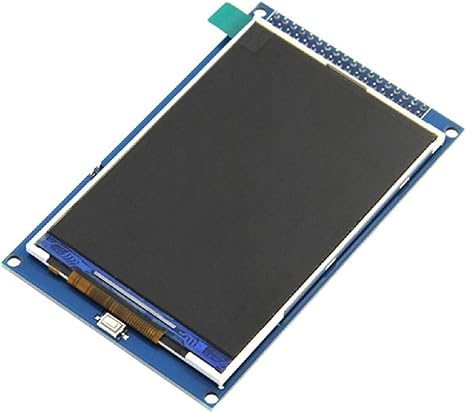
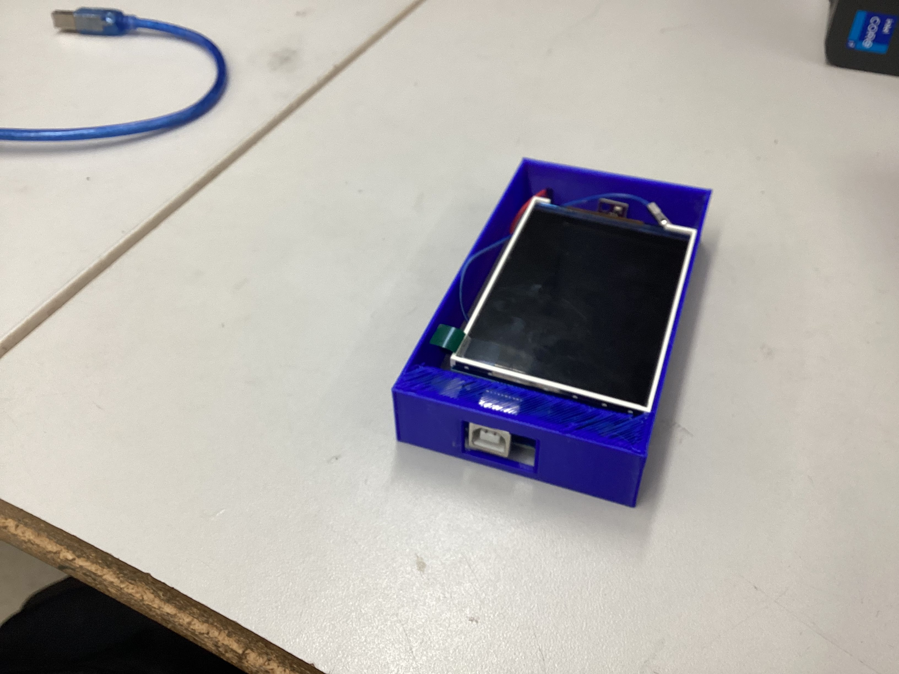
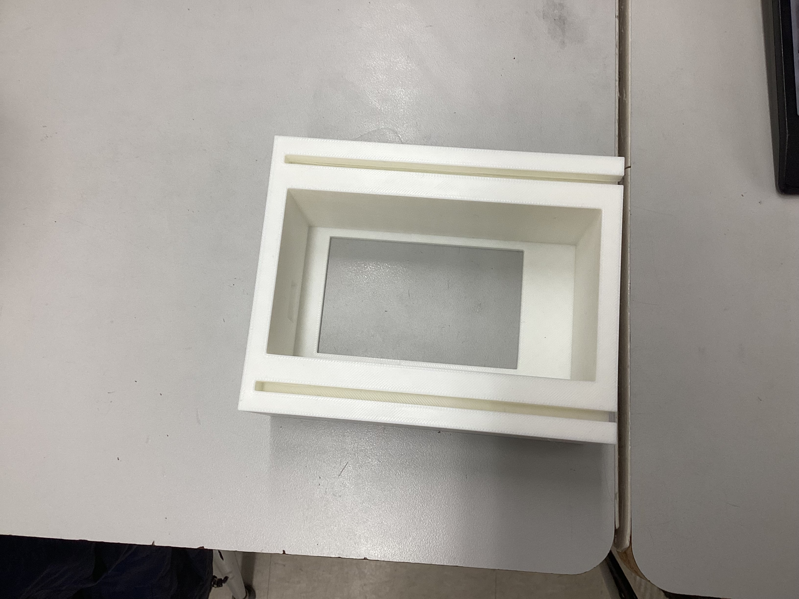
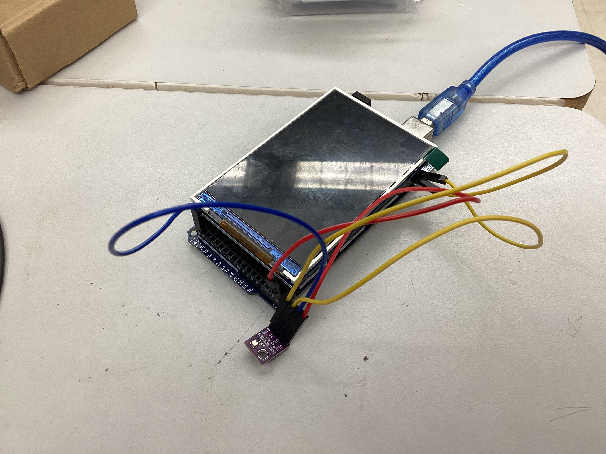
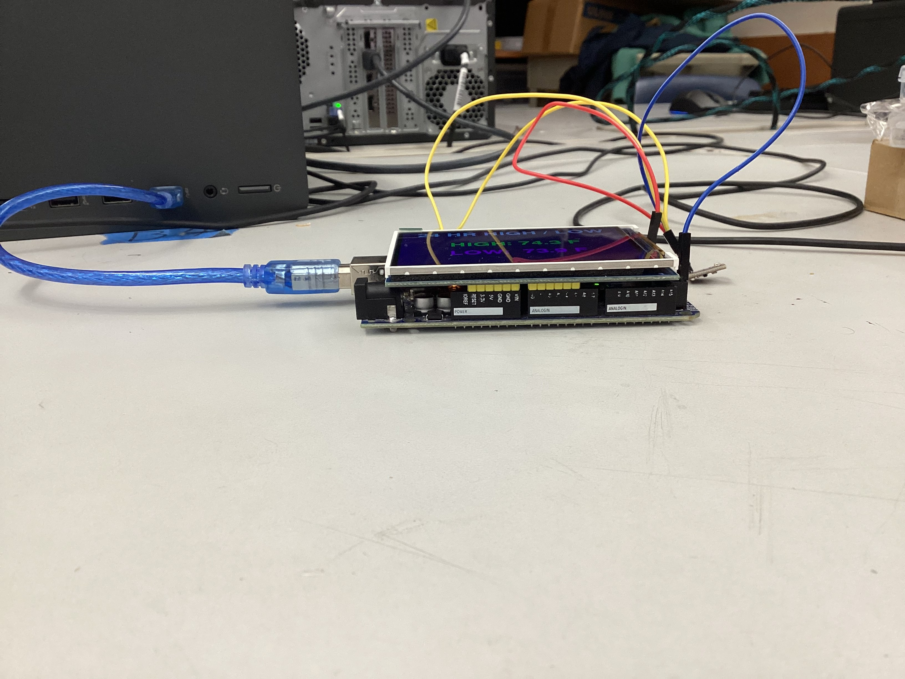
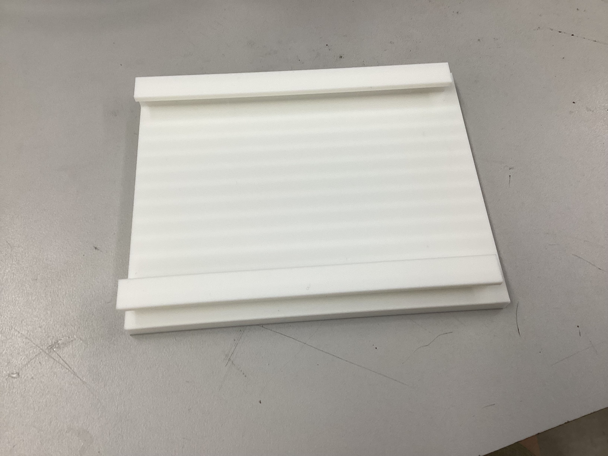

This project is an Arduino-based weather station that measures and displays temperature, humidity, barometric pressure, and the maximum and minimum temperature in real time. The device uses a BME280 sensor to collect data and outputs readings to a TFT display shield mounted on an Arduino Mega. All components are in a custom-designed, 3D-printed enclosure created using Fusion 360 and printed on a Bambu printer. A successful project displays accurate, live environmental data in a clear, readable format within a clean, fully enclosed case.
Inspiration: Arduino Easy Weather Station With BME280 Sensor by Nick Koumaris
How This Project Differs From the Source: The original tutorial uses an Arduino Mega paired with a basic 16x2 LCD shield and displays temperature, humidity, and pressure simultaneously, updating every two seconds in Celsius. This project diverges in several significant ways. The display was upgraded to a TFT color shield, requiring entirely rewritten display code. The interface was redesigned to cycle through individual measurements every three seconds rather than showing all readings at once. Fahrenheit was substituted for Celsius. A max/min temperature tracking feature with an automatic 24-hour reset was added — functionality not present in the source. Finally, the entire electronics assembly was enclosed in an original custom case designed from scratch in Fusion 360 and 3D printed, whereas the source project has no enclosure.
Design considerations: Ensure clear readability, accurate sensor placement, proper display cycling, and robust enclosure design.
Arduino IDE was used to write, test, and upload all code to the Arduino Mega. Fusion 360 was used to design the custom 3D-printed enclosure, with calipers used to take precise measurements of the electronics before modeling. Bambu slicer software was used to prepare and send print files to the Bambu 3D printer. GitHub was used for version control and to store all project files, including code, design files, photos, and videos. Flint (an AI-assisted BOM checker) was used during the research phase to verify that selected parts matched the project requirements. ChatGPT was used throughout the project to assist with troubleshooting code and display issues.
A soldering iron was used to solder header pins onto the BME280 sensor. Calipers were used to measure component dimensions for accurate enclosure design. A Bambu 3D printer was used to fabricate all enclosure parts. A laptop was used for all software work, coding, and file management. A breadboard was used during early testing phases to verify individual components before final assembly.
January 6: Joined the classroom and began researching possible project options. Top candidates included a phantom chessboard, home automation intruder alarm, online security camera, GPS/SMS call box, and a weather station display.
January 7: Selected the Weather Station as the final project. Began work on the task analysis.
January 8: Completed the task analysis. Started building the Gantt Chart.
January 9: Finished the Gantt Chart.
January 12: Began researching required parts and started drafting the Bill of Materials.
January 14: Completed the BOM. Used Flint, an AI tool, to verify that the selected parts matched the tutorial requirements. This process identified a better sensor option than the one originally listed.
January 15: Began writing test code for the breadboard setup. Installed the Adafruit BME280 library and the LiquidCrystal library. Set up a GitHub repository and configured it on a home computer for version control.
January 20: Finished template testing code. Began customizing the code for the new display using AI assistance — provided the template code and prompted the AI to adapt it for the new display.
January 21: Revised the code to add max/min temperature tracking and changed the display to cycle through one measurement at a time, switching every three seconds. Max/min resets every 24 hours. Created separate blink test code for the display and sensor test code, then combined them into a unified test file.
January 22: Ordered parts. Switched from the Arduino Mega to a standard Arduino Uno since only a few ports were needed. Created new test code for the Uno.
January 23: Converted all code from the Arduino Mega to the Arduino Uno. Found inspiration for the enclosure design online.
January 28: Parts arrived. Tested the Arduino Uno and ran sensor test code. Encountered a common error where the sensor was not detected — determined that header pins needed to be soldered onto the sensor before it could be used.
February 4: Soldered header pins onto the BME280 sensor. Wired the sensor to the breadboard: GND to ground, VCC to power, SDA to A4, and SCL to A5. Switched back to the Arduino Mega and moved SDA and SCL to the dedicated pins — code continued to work. Connected the display shield to the Mega and powered it on successfully.
February 5: Ran test code for the display. The screen powered on but did not respond to the code.
February 6: Continued troubleshooting the display with no success. Researched the issue on the Arduino forums and used ChatGPT to assist. Concluded that the display was incompatible with the Arduino Mega. Decided to order a different display. In the meantime, updated the code to change temperature units from Celsius to Fahrenheit and refined the max/min reset logic.
February 10: Ordered a replacement display shield. Continued troubleshooting the original 3.5" TFT display without resolution. Researched potential enclosure designs.
February 11: New display arrived. It powered on and ran code successfully, but its pin layout blocked the ports needed for the sensor.
February 18: New 5V sensor arrived. The sensor ports were still blocked by the display shield. Used AI to help rewrite the code to work around the pin conflict.
February 19: Successfully got the sensor and display working together. Refined text size and color settings using AI assistance, as the initial output was small and difficult to read.
February 23: Completed all measurements for the enclosure using calipers. Began designing the case in Fusion 360. Sent the first print to the Bambu printer.
February 24: Received the first print. The part had been printed on the wrong side, requiring supports that damaged the surface. The walls were also too thin. The cable hole and overall fit were functional. Next steps: increase wall thickness, improve the top opening to frame the display properly, and reorient the print to eliminate supports.
February 25: Updated the design with thicker walls, better electronics coverage, and correct print orientation. The display fit improved, though electronics were still partially exposed. Added a sliding rail mechanism to allow a back panel to close the case. Started the next print.
February 26: Designed the top sliding piece by copying measurements from the bottom piece to ensure the rail mechanism would fit. Printed the top piece — it was slightly too large. Identified the issue, adjusted measurements, and revised both the top and bottom pieces. Started a combined print of both parts.
February 27: The latest print came out well — the sliding mechanism worked correctly. The top piece slid in smoothly, but the bottom piece was still slightly too large, allowing the display to shift. Corrected the cable hole position and reduced the bottom piece by 0.3 inches to improve the display fit. Started a new print.
March 2: Received the updated print. The cable hole was slightly off. Lowered its position by approximately 0.1 inches and started another print.
March 3: Received the final print. The cable fit well, and the display sat noticeably flatter. Some movement in the display remains — a future improvement would be to tighten the tolerances further. Also observed that after running for 30 minutes, the temperature reading rose by 7 degrees, likely due to heat generated by the electronics inside the enclosed case. Future iterations should include ventilation holes near the sensor to improve reading accuracy. Uploaded 80 files to GitHub, including photos and videos. All images were converted from HEIC to JPEG and all videos from MOV to MP4.
March 4: Completed final documentation photos. Created a slideshow for the project presentation and built a GitHub website to host project files and documentation.
One of the most significant technical challenges was display compatibility. The first display was found to be incompatible with the Arduino Mega after several days of troubleshooting, requiring a replacement to be ordered. When the new display arrived, it introduced a new problem by blocking the sensor's pin connections, which required code-level rewrites to resolve. These setbacks were instructive — they demonstrated that hardware integration is rarely straightforward and that troubleshooting is an essential, time-consuming part of the engineering process rather than an exception to it.
The enclosure design went through six printed iterations over the course of two weeks. Each version revealed new issues — walls too thin, display misaligned, cable hole off by a fraction of an inch — that required design updates in Fusion 360 before reprinting. The sliding rail mechanism that was developed to close the case was a design solution that emerged directly from the constraints of the build, rather than from the original plan.
Managing a project of this scale over several months required consistent organization. Using GitHub for version control, maintaining detailed documentation, and tracking decisions as they were made all proved to be as important as the technical work itself. The project also highlighted the value of AI tools — used responsibly to assist with debugging and code customization — as a practical resource in the engineering workflow.
Looking ahead, several improvements would strengthen the project. Adding ventilation holes around the BME280 sensor would allow better airflow and improve measurement accuracy, as heat from the enclosed electronics was observed to skew temperature readings over time. Tighter tolerances in the enclosure would eliminate the remaining display movement. A longer-term enhancement could include Wi-Fi connectivity via an ESP8266 or similar module, enabling the station to log data over time or push readings to a web dashboard — expanding the project from a standalone display into a networked environmental monitoring tool.







.jpg)
.jpg)


.jpg)

.jpg)

.jpg)

.jpg)







